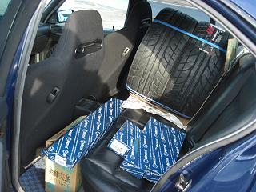
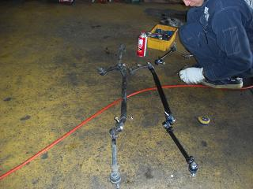
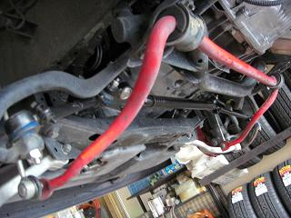
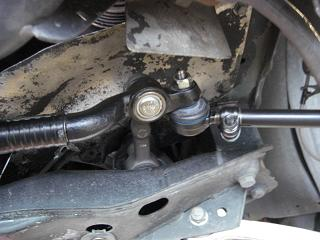
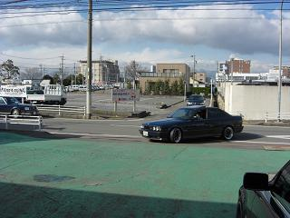
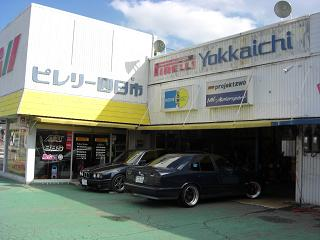

 今回交換したのは、純正強化品がうたい文句のマイレ製 左右のステアリングタイロッド、センターアーム、アイドラーアーム どうせ交換するなら。。ってことで極上ステアリングを味わうべくタイヤも新品に交換やー！
|
 DIYで交換を企むも、プーラーが何種類か必要だとか、、 サイドスリップ？の測定が必要だとかで、今回もアルタァさん行きつけのショップにお願いした。 写真は、取り外した物と寸法を合わせているところ。 外したタイロッドエンドはグラグラ。。
|
 取り付けてもらったところ。 下回りを見ると。。 ミッションからオイル漏れが・・・ ったく。 費用かけても安心して乗れんし。。もう。。 困ったもんだ。
|
 センタータイロッド、アイドラーアーム、ステアリングタイロッドの図
|
 試走→サイドスリップ→調整を数回繰り返し、完成。 今回は、やはりショップにお願いして正解だと思った。
|
 お世話になったショップ、ピレリー四日市さん。 見ていて１つ１つの作業がとても信頼できる。 90年代初めにタイムスリップしたような写真（笑 交換後は、いままで悩んでいたのが嘘のようにハンドルが取られない。 わざと轍の部分を踏んでみると、若干のフィードバックはあるが、まったく問題なし。 それと、なぜか乗り心地もよくなった。（凸凹でゴツゴツしなくなった） ハイグリップタイヤを脱いだらもっと良さそう。
|